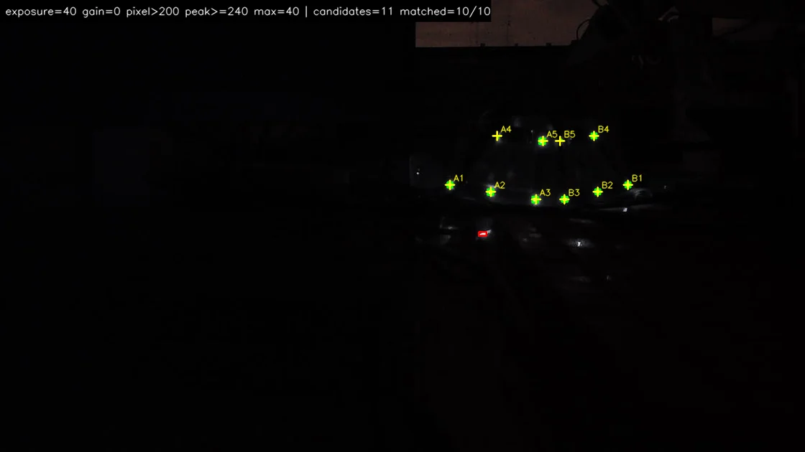

- 做什么
- 固定红外相机跟踪 20 颗 LED 的标记物，实时输出六自由度位姿
- 我做的
- 在参考设计上修改 LED 载体与 PCB；LED 模型接入 Monado、相机标定、实时适配器和三维查看器、失锁问题定位与修复
- 技术栈
- Monado · RANSAC PnP · AprilGrid 标定 · OpenCV / V4L2 · OpenGL
- 实测
- 相机到跟踪器约 29.6 FPS，当前视角可见灯 10/10 匹配，标定重投影 RMS 0.506 px
- 难点与解决
- 实拍重投影 RMS 约 2.0–2.3 px，旧评分的门限折合 RMS 只有约 1.73 px，候选全被拒。统一为 3 px RMS 并按可视角筛灯后，60 帧回放从 0 帧可用变为 60 帧。
- 目前进展
- 实时链路可运行；动态精度和真实距离、角度误差还没有独立基准测量。
LED 标记和相机标定
标记物模型记录 20 颗 LED 的三维位置、法向、有效光学半径和可视角。标记转动时，每一帧根据视角判断当前应当看见哪些灯。相机用 4×4 AprilGrid 标定，得到 KM2010 红外相机在 1280×720 下的内参。



从光斑到六自由度位姿
跟踪器先从图像提取光斑。已有可信位姿时，把 LED 模型投影到图像，优先检查当前位置应看到的灯；失去先验时扩大对应搜索。得到二维光斑与三维灯点的对应后，用 RANSAC PnP 剔除外点并精修姿态，再核对重投影残差。搜索与精修复用 Monado 上游的 constellation 跟踪器。
- 像素检测光斑中心与亮度
- 几何投影 LED 模型，求相机相对位姿
- 稳定验证残差、运动和时间顺序
快动与短时遮挡
没有可信先验时至少匹配 5 颗灯；先验通过位置与朝向检查时，3～4 颗光斑即可验证。显示层用速度预测和四元数角差拦截跳变。静止时用较低截止频率抑制抖动，运动时提高截止频率，并用球面插值平滑旋转。
灯点可见却丢跟踪
一段实拍里已经检测到 10 个光斑，跟踪却一直输出不了位姿。回放发现，候选的重投影 RMS 约 2.0–2.3 px，而旧评分把 3 当作均方误差的上限，折合 RMS 只有约 1.73 px，正确的候选全被拒掉。
我把门限统一为 3 px 的 RMS，并按模型的有效可视角筛选参与匹配的灯点。
- 原版
- 0 帧
- 修正评分与可视角后
- 60 帧
- 相机到跟踪器
- 约 29.6 FPS
- 当前视角可见灯匹配
- 10 / 10
- 标定重投影 RMS
- 0.506 px
数据来自 KM2010 的 1280×720 MJPEG 实时链路和 AprilGrid 标定记录。0.506 px 衡量的是标定图像的拟合误差，不是定位精度。
局限与下一步
- 运动段还不稳。另一段含运动的 90 帧记录，修复后合格帧从 21 帧升到 67 帧，仍没做到全部有效。
- 没有独立精度基准。真实距离和角度误差、动态精度，都需要移动 LED 目标并用独立基准来测。
- 纯视觉，时间戳粗。没有接 IMU；相机时间戳是驱动缓冲区时间，不是曝光时刻，也没做曝光中点补偿。
- 只在相机坐标系。要给机器人或场地使用，还需要相机到基座的外参标定。